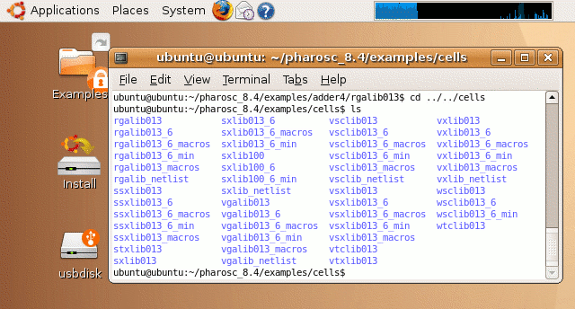
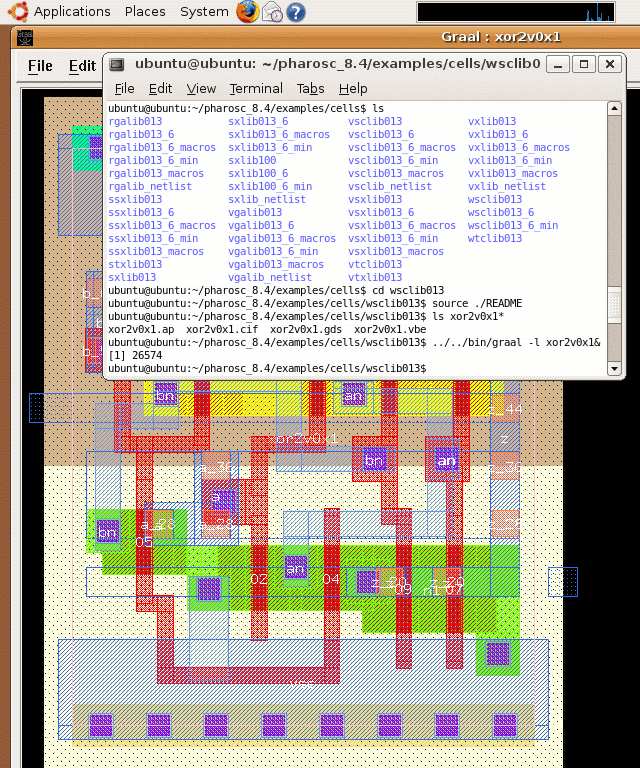

| vlsitechnology.org /Live CD help /viewing layout | |
Viewing layout | |
Linux help
Windows help
Linux Live CD
The examples/cells directory has all the cell library information.
These files are all in the directory with the basic technology name (eg in rgalib013). The other rgalib directories have further support files for the logic synthesis.

In the basic technology directories is a README file which can be sourced and then the layout viewed. For example, to view the AP files with Graal, one runs Graal by using its location in examples/bin. Clicking on the Graal window will bring all the layout to the front.
